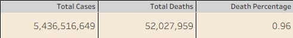
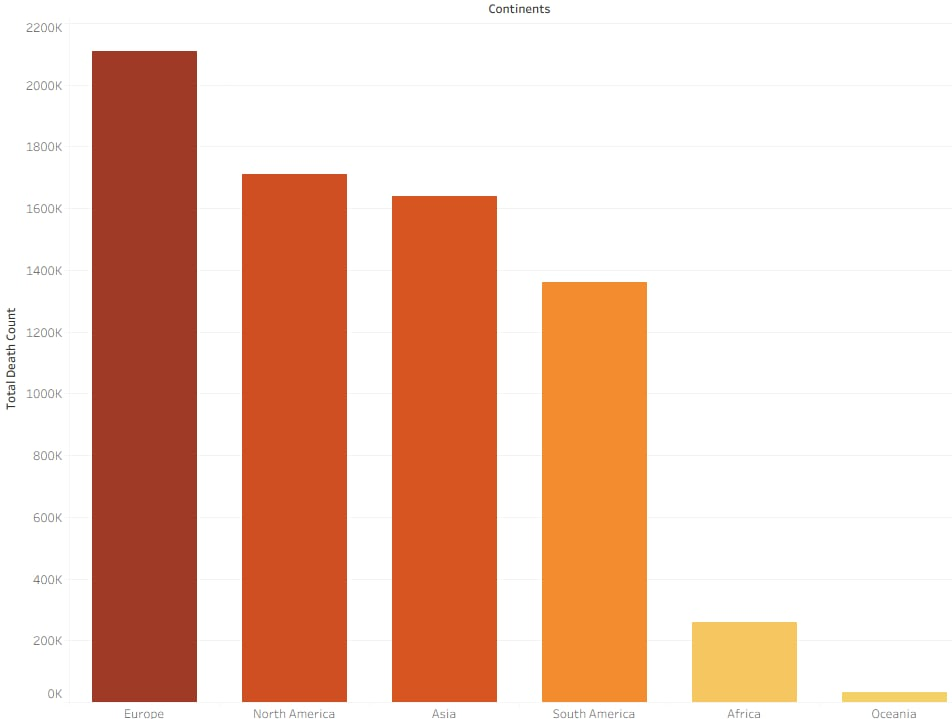
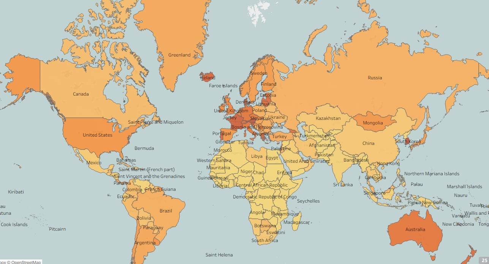
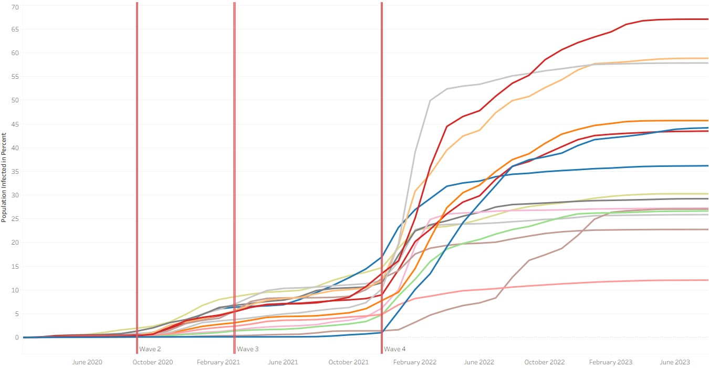
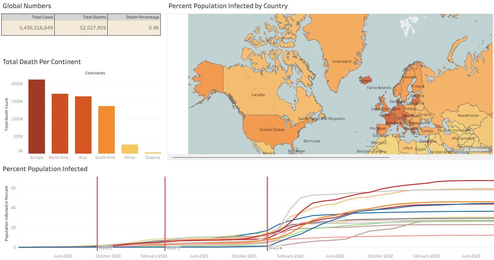

Pandemic Data Dashboard
SQL
Tableau
Project Overview
Although the global pandemic was not a positive event in human history, it produced numerous large and valuable datasets. For many aspiring data analysts,
(including myself) this created an opportunity to practice real-world analysis on rich and complex data source.
In this project, I use the dataset available at https://ourworldindata.org/covid-deaths to explore several questions with SQL, and then visualize the key insights in a Tableau dashboard.
My goal was to build analytical skills while creating meaningful summaries of the pandemic data.
In this project, I use the dataset available at https://ourworldindata.org/covid-deaths to explore several questions with SQL, and then visualize the key insights in a Tableau dashboard.
My goal was to build analytical skills while creating meaningful summaries of the pandemic data.
Project Questions
- How severe was COVID-19 in terms of global cases and death percentage?
- Which countries experienced the highest infection levels relative to their population size?
- What global patterns can be observed in the death count breakdown by continent?
- How did the infection rate relative to population size change over time?
EDA in SQL
First, let's examine the columns of our tables
Select
COLUMN_NAME,
DATA_TYPE,
CHARACTER_MAXIMUM_LENGTH,
IS_NULLABLE
FROM
INFORMATION_SCHEMA.COLUMNS
WHERE
TABLE_NAME = 'Covid_Deaths';
code nvarchar 255 YES
continent nvarchar 255 YES
location nvarchar 255 YES
date datetime NULL YES
population float NULL YES
total_cases float NULL YES
new_cases float NULL YES
new_cases_smoothed nvarchar 255 YES
total_cases_per_million float NULL YES
new_cases_per_million float NULL YES
new_cases_smoothed_per_million nvarchar 255 YES
total_deaths float NULL YES
new_deaths float NULL YES
Select
COLUMN_NAME,
DATA_TYPE,
CHARACTER_MAXIMUM_LENGTH,
IS_NULLABLE
FROM
INFORMATION_SCHEMA.COLUMNS
WHERE
TABLE_NAME = 'Covid_Vaccinations';
code nvarchar 255 YES
continent nvarchar 255 YES
location nvarchar 255 YES
date datetime NULL YES
icu_patients nvarchar 255 YES
stringency_index float NULL YES
reproduction_rate nvarchar 255 YES
total_tests nvarchar 255 YES
new_tests nvarchar 255 YES
total_tests_per_thousand nvarchar 255 YES
new_tests_smoothed nvarchar 255 YES
total_vaccinations nvarchar 255 YES
people_vaccinated nvarchar 255 YES
people_fully_vaccinated nvarchar 255 YES
new_vaccinations nvarchar 255 YES
new_vaccinations_smoothed nvarchar 255 YES
How did the severity of COVID-19 differ across countries and change over time?
Select Location, date, total_cases, total_deaths, (total_deaths/NULLIF(total_cases, 0))*100 as DeathPercentage
from Portfolio_Covid_Project..Covid_Deaths
where location like '%wed%' or location like '%unga%'
order by 1,2;
Location date total_cases total_deaths DeathPercentage
Hungary 2020-06-23 4107 573 13.9517896274653
Hungary 2020-06-24 4114 576 14.0009722897423
Hungary 2020-06-25 4123 577 13.9946640795537
Sweden 2020-04-09 9599 793 8.2612772163767
Sweden 2020-04-10 10053 870 8.65413309459863
Sweden 2020-04-11 10448 887 8.48966309341501
Which countries reached the highest infection levels to their total population?
Select location, population, MAX(total_cases) as highestInfection, MAX((total_cases/population))*100 as PercentPopulationInfected
from Covid_Project..CovidDeaths
where continent is not null
group by location, population
order by PercentPopulationInfected desc;
location population highestInfection PercentPopulationInfected
Brunei 455374 350550 76.9806796171938
San Marino 34113 25292 74.1418227655146
Austria 9064678 6083535 67.1125328445202
South Korea 51782515 34571873 66.7636035059325
Martinique 349462 230354 65.9167520359867
Slovenia 2115231 1365356 64.5487892338945
Jersey 103493 66391 64.1502323828665
Faroe Islands 54039 34658 64.1351616425174
Luxembourg 653315 400385 61.2851381033651
Andorra 79722 48015 60.2280424475051
What global trends can be observed in daily COVID-19 cases, deaths, and fatality rates over time?
Select FORMAT(date, 'yyyy-MM-dd') AS date,
SUM(new_cases) as daily_new_cases,
SUM(CAST(new_deaths as int)) as daily_new_deaths,
SUM(CAST(new_deaths as int)) * 100.0 / NULLIF(SUM(new_cases), 0) as daily_fatality_rate
from Portfolio_Covid_Project..Covid_Deaths
where continent is not null
group by date
order by 1,2;
date daily_new_cases daily_new_deaths daily_fatality_rate
2020-03-21 152907 8276 5.41244024145396
2020-03-22 699975 41522 5.93192614021929
2020-03-23 166095 9197 5.53719257051687
2020-03-24 194690 9469 4.86362935949458
How does the number of new vaccinations compare across countries and continents aligned with their population size?
Select dea.continent, dea.location, FORMAT(dea.date, 'yyyy-MM-dd') AS date, dea.population, vac.new_vaccinations
from Portfolio_Covid_Project..Covid_Deaths as dea
join Portfolio_Covid_Project..Covid_Vaccinations as vac
on dea.location = vac.location and dea.date = vac.date
where dea.continent is not null
order by 1,2,3;
continent location date population new_vaccinations
Asia South Korea 2022-10-17 51782515 6258.0
Asia South Korea 2022-10-18 51782515 5736.0
Asia South Korea 2022-10-19 51782515 5976.0
Asia South Korea 2022-10-20 51782515 6866.0
Data Visualization
In the section below, I used Tableau to visualize the outputs of my SQL queries.
Unlike previous projects where the focus was on building complex dashboard mechanics, the primary goal here was to perform data exploration via SQL and use visualizations to clearly present the extracted insights.
Unlike previous projects where the focus was on building complex dashboard mechanics, the primary goal here was to perform data exploration via SQL and use visualizations to clearly present the extracted insights.
How severe was COVID-19 in terms of global cases and death percentage?
Select SUM(new_cases) as total_cases, SUM(cast(new_deaths as int)) as total_deaths, SUM(cast(new_deaths as int))/SUM(New_Cases)*100 as DeathPercentage
From Portfolio_Covid_Project..Covid_Deaths
where continent is not null
order by 1,2

What global patterns can be observed in the death count breakdown by continent?
Select Location, sum(cast(new_deaths as int)) as TotalDeathCount
from Portfolio_Covid_Project..Covid_Deaths
--use of aggregated records
where (continent is null OR continent = '') and location in ('Europe','North America','Asia','South America','Africa','Oceania')
group by location
order by TotalDeathCount desc

Which countries experienced the highest infection levels relative to their population size?
Select Location, Population, MAX(total_cases) as HighestInfectionCount, Max((total_cases/population))*100 as PercentPopulationInfected
From Portfolio_Covid_Project..Covid_Deaths
Group by Location, Population
order by PercentPopulationInfected desc

How did the infection rate, relative to population size change over time?
Select Location, Population, FORMAT(date, 'yyyy-MM-dd') AS date, MAX(total_cases) as HighestInfectionCount, Max((total_cases/population))*100 as PercentPopulationInfected
From Portfolio_Covid_Project..Covid_Deaths
Group by Location, Population, date
order by PercentPopulationInfected desc

To conclude the project, I compiled the individual visualizations into an navigable dashboard.
You can explore the fully interactive, high-resolution version on my Tableau Public profile: LINK

You can explore the fully interactive, high-resolution version on my Tableau Public profile: LINK